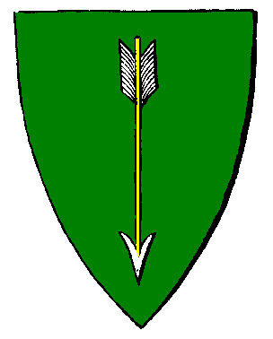

| Übersicht,
Anschläge und Stammtisch (RPG) |
|
Kollekte
|
| Minuiriel O Ithil (RIP) |
Die Dunkelheit mit ihrem Sendboten ist gebannt. Mächtige und strahlende Häuser Unserer Sieben gebieten den finsteren Mächten Einhalt und erfüllen unsere Herzen mit Freude. Erfüllung fanden auch die Erbauer dieser prächtigen Tempel, und ihnen gebührt unser tiefer Dank. Aber sie fanden nicht nur Erfüllung, nein: Sie fanden auch Leerung. Nämlich die ihrer Goldbeutelchen. *breitet die Arme aus* Lasst sie in Zeiten der Rettung und der Freude mit dieser Last... *zögert kurz weils ja eben die Last ist die fehlt und mach dann weiter* ... nicht allein! Auch sie haben Haus und Hof und bestimmt auch Eselchen zu unterhalten! Das kostet sehr viele Goldstücke die sie nach dem Tempelbau vielleicht nicht mehr ihr Eigen zu nennen vermögen! Maki sagt: Wir sollen immer zueinander stehen!
Darum:
Hiermit sei die Kollekte für das Haus Unserer Larja eröffnet. Der Zehnte ist schon aufgebracht. So fehlen noch Neunhunderttausend Goldstücke. Öffnet Eure Beutel!
Die Kollekte geht in diesem Falle an einen ehrenwerten Bruder im Glauben an Larja: Priester Logan. Gespendete Beträge werden hier veröffentlicht, sofern keine Geheimhaltung gewünscht wird!
Beträge werden erwartet von
- Priester Logan, wohnhaft auf Long Island
- Stellvertretend Minuiriel O Ithil, auch wohnhaft auf Long Island
Nachschrift:
Im Wissen um die hohen Baukosten der Anderen Sechs Häuser Unserer Sieben seien auch deren Erbauer herzlich eingeladen, sich hier zu benennen und sich anzuschliessen. So kann auch für sie gesammelt werden. Jederelf wird beschützt und so mag jederelf ders vermag auch sein Scherflein beitragen. Die Sieben mit uns!
Baronesse Minuiriel O Ithil,
Vorsteherin von Sala Muinthel,
Ehefrau des ehrenwerten Sojus Bane
Zur 13. Stunde am 32.Blumenmond im Jahre 426 |
29.09.06 14:34
 |
|
| Carlos (RIP) |
Ich bin neu auf der Scherbe und würde mich auch über ein paar Spenden freuen. Ich habe auch schon einen Glauben angenommen.
Carlos
Zur 13. Stunde am 32.Blumenmond im Jahre 426 |
29.09.06 14:38
|
|
| Minuiriel O Ithil (RIP) |
*linst mit missbilligendem Blick in den Klingelbeutel, macht ein ´dzdzdz´, holt den Hosenknopf wieder heraus und gibt ihn zurück* Neinaberauch... allein der Tempel Unserer Larja hat eine Million Goldstücke gekostet.
Baronesse Minuiriel O Ithil,
Vorsteherin von Sala Muinthel,
Ehefrau des ehrenwerten Sojus Bane
Zur 14. Stunde am 32.Blumenmond im Jahre 426 |
29.09.06 14:48
|
|
| Navarion Fenvarwar (RIP) |
Werter Carlos, dieser Beitrag dient nicht der Bereicherung einzelner Neulinge, sondern eher der Rückerstattung der enormen Baukosten für die Tempel.
Leistet etwas, und Euch kann geholfen werden.
Bettler und Hausierer sollten auf den Marktplatz verwiesen werden, versucht vielleicht dort euer Glück.
Werter Minuiriel O Ithil, sind Spendenabgaben ausschließlich auf Long Island möglich oder kann bei Bedarf auch ein anderer Sammelort ausgemacht werden?
Graf Madras,
Vorsteher von Stullenberg
Zur 14. Stunde am 32.Blumenmond im Jahre 426 |
29.09.06 14:48
|
|
| Navarion Fenvarwar (RIP) |
(( Sorry, zu spät aufgefallen ... sollte natürlich
WertE Minuiriel O Ithil sein ))
Graf Madras,
Vorsteher von Stullenberg
Zur 14. Stunde am 32.Blumenmond im Jahre 426 |
29.09.06 14:49
|
|
| Minuiriel O Ithil (RIP) |
*verneigt sich* Vielen Dank, werter Graf. Unser Priester Logan weilt am morgigen Tag glaub ich auf der Lagerinsel. Sonst kann ich auch reisen.
Baronesse Minuiriel O Ithil,
Vorsteherin von Sala Muinthel,
Ehefrau des ehrenwerten Sojus Bane
Zur 14. Stunde am 32.Blumenmond im Jahre 426 |
29.09.06 14:50
|
|
Solara
  |
das ist eine sehr gute Idee. Einen Beitrag leiste ich ebenfalls, wie ich den ehrenwerten Logan bereits wissen ließ, indem er nicht die volle Höhe des Geldes für die Errichtung des Tempels an mich zurückzahlen soll und somit spende ich 200 k GS in diese Sache.
Gräfin Solara,
Vorsteherin von Lunaé,
Anführerin der glorreichen Nation "Weiße Rosen Kardarons"
Zur 17. Stunde am 32.Blumenmond im Jahre 426 |
29.09.06 15:37
|
|
Logan
  |
Bevor sich jetzt bestimmte Leute in Vorfreude die Hände reiben und schon das Holz für einen Scheiterhaufen zusammensuchen, wenn sie dazu überhaupt von ihren Sesseln hochkommen....
Nein, ich bin kein Priester, trage keinen Titel eines Konvents und maße mir bei den Göttern auch keinen Titel an.
Ich bin nur ein einfacher Gläubiger Larjas der getan hat was jeder wahre Gläubige auch getan hätte.
Freiherr Logan,
Vorsteher von Garden of Honor,
Bogenmeister der Südlichen Allianz
Zur 17. Stunde am 32.Blumenmond im Jahre 426 |
29.09.06 15:38
|
|
Tilion
  |
100k von mir. Bitte meldet Euch bei Gelegenheit wegen Ort und Zeit der Übergabe.
Freiherr Tilion,
Vorsteher von Avarannon
Zur 19. Stunde am 32.Blumenmond im Jahre 426 |
29.09.06 15:59
|
|
| Schwarzenberg (RIP) |
Ich beteilige mich auch mit 200.000 GS. Könntest Du einen entsprechenden Preis in Deinem Handelsposten festlegen?
Schwarzenberg
Zur 3. Stunde am 33.Blumenmond im Jahre 426 |
29.09.06 17:57
|
|
Luzi ni Mur
  |
Geldverschwendung!
*weiterstapft*
Luzi ni Mur
Zur 3. Stunde am 33.Blumenmond im Jahre 426 |
29.09.06 17:57
|
|
| Bluemchen (RIP) |
100.000 stiftet meine Frau Goldenes!
Bluemchen,
Hohepriester im Dienste des einzig wahren Glaubens an Pheron,
Ehemann der reizenden Goldenes,
Träger der mächtigen Axt des Krolltok,
Legionär Pherons,
Der dem Ulfhednir sein Spielzeug kaputtgemacht hat
Zur 10. Stunde am 33.Blumenmond im Jahre 426 |
29.09.06 19:37
|
|
Alberix, Sohn des Duglim
  |
Es erfüllt mich mit Stolz, an dem Kampf in Einigkeit - und gegen einen gemeinsamen Feind der Scherbe, teilgenommen zu haben.
So sollen wir den Geist dieser Einigkeit weiterführen!
Ich werde 100´000GS aus meiner bescheidenen Geldkatz beisteuern.
Urvans Erleuchtung über all jene die es verdienen.
Baron Alberix, Sohn des Duglim,
Vorsteher von Rogalis
Zur 12. Stunde am 33.Blumenmond im Jahre 426 |
29.09.06 20:06
|
|
Logan
|
Schon jetzt übersteigt die Summe der Kollekte die Kosten die beim Bau entstanden sind und ich möchte natürlich auch mein Scherflein dazu beitragen.
Daher schlage ich vor das die gesammte Summe gleichmässig unter allen Baumeistern aufgeteilt wird.
Ansonsten bitte ich um Vorschläge was mit der Kollekte geschehen soll.
Ausgleichspeisungen für die Bedürftigen?
Eine Gedenkstätte in Lager Mitte für den ewigen Kampf gegen das Böse?
Lasst eure Vorschläge hören.
Freiherr Logan,
Vorsteher von Garden of Honor,
Bogenmeister der Südlichen Allianz
Zur 23. Stunde am 33.Blumenmond im Jahre 426 |
29.09.06 22:33
|
|
Alberix, Sohn des Duglim
|
Verwendet den Überschuss dafür, den Dieb zu finden, der einigen Helfern gegen das Böse, als Danke für Ihren Einsatz, Ihre Waffen und Ausrüstungen geklaut hat.
Es geht mir nicht um die Rückgewinnung der gestohlenen Waren - obwohl der Verlust meines Langschwertes sehr hoch ist - sondern darum, den oder die Diebe einer gerechten Strafe zuzuführen.
Der moralische Frevel wiegt in meinen Augen grösser als der gesammte materielle Wert (welcher mehrere Millionen GS beinhaltet), den der Dieb sich unter den Nagel gerissen hat.
Baron Alberix, Sohn des Duglim,
Vorsteher von Rogalis
Zur 1. Stunde am 34.Blumenmond im Jahre 426 |
29.09.06 23:11
|
|
| Bluemchen (RIP) |
Also meine Frau sagt, wir nehmen fuer den Bau der Kultstaette nichts, also uns bitte bei einer etwaigen Verteilung ausklammern.
Bluemchen,
Hohepriester im Dienste des einzig wahren Glaubens an Pheron,
Ehemann der reizenden Goldenes,
Träger der mächtigen Axt des Krolltok,
Legionär Pherons,
Der dem Ulfhednir sein Spielzeug kaputtgemacht hat
Zur 12. Stunde am 35.Blumenmond im Jahre 426 |
30.09.06 7:10
|
|
Olivia v. glänzenen Wolfstern
  |
werte Minuiriel,
auch wenn mein Glaube nicht der eure ist, sehe ich doch das Gute hinter den Handlungen der Lichtsieben und möchte mich ebenfalls mit 100k GS im Sinne des Segensreichen beteiligen,
Urvan zum Grusse und Friede mit uns allen,
Olivia
Baronesse Olivia Sternenglanz,
Vorsteherin von Edhelgarth,
Verlobte des ehrenwerten Elrohir Allobodan
Zur 19. Stunde am 35.Blumenmond im Jahre 426 |
30.09.06 8:59
|
|
| Grumbart (RIP) |
Der Vorschlag von Alberix, Sohn des Duglim scheint mir nicht der verkehrte zu sein.
Viele, die dort geholfen haben, um den König der Untoten zu vernichten, haben dies bitter bereut, indem sie ihre Waffen bzw Rüstungen in dem Moment verloren, wo sie sich auf der Stadt von Krankheiten heilen liessen.
Wenn also Spenden über sein sollten, wären diese sicher nicht an verkehrter Stelle bei den Unterstützern, die den Sendeboten ins Jenseits befördert haben.
Grumbart,
Hohepriester im Dienste des einzig wahren Glaubens an Urvan,
Anführer der Legion Urvans,
General des Fankenreichs
Zur 24. Stunde am 36.Blumenmond im Jahre 426 |
30.09.06 15:23
|
|
| Minuiriel O Ithil (RIP) |
*schreibt begeistert* Es ist wunderbar, soviel Anteilnahme zu erleben. Nicht nur allein wegen den Goldstücken, nein, noch schöner ists zu sehen dass Leute sich umeinander kümmern und zueinander stehen. Habt vielen, vielen Dank dafür!
Der werte Logan hat schon mehr Spendenangebote bekommen als gebraucht werden. So möcht ich nochmal fragen: Wer hatte sonst noch Ausgaben mit dem Tempelbau? Oder kamen teure Waffen abhanden oder so? Dann meldets hier, bitte!
Freifrau Minuiriel O Ithil,
Vorsteherin von Sala Muinthel,
Ehefrau des ehrenwerten Sojus Bane
Zur 7. Stunde am 37.Blumenmond im Jahre 426 |
30.09.06 17:10
|
|
Liriel Schattenlauf
 |
*kratzt sich am Kopf*
Hmmm das wäre mal wieder eine reaktion des Orden des Grünen Mondes. Sie dienen LArja noch immer treu
*Lächelt erfreut auf*
Wenn ich etwas tun kann ihr wisst ja wo ich mein unwesen treibe *grinst breit*
Liriel Schattenlauf
Zur 11. Stunde am 37.Blumenmond im Jahre 426 |
30.09.06 18:04
|
|
| Minuiriel O Ithil (RIP) |
*verneigt sich* Es wird für die grossherzige Spende der Nation Vertex Time Travellers in Höhe von Dreihunderttausend Goldstücken gedankt.
Freifrau Minuiriel O Ithil,
Vorsteherin von Sala Muinthel,
Ehefrau des ehrenwerten Sojus Bane
Zur 20. Stunde am 37.Blumenmond im Jahre 426 |
30.09.06 20:13
|
|
Alberix, Sohn des Duglim
|
*an dem Anschlag vorbeikommt und dich Stirn runzelt*
Was passiert nun mit dem überschüssigen Geld?
*leicht zu lächeln beginnt*
Zudem wollte ich darauf hinweisen, dass es nicht verboten ist, noch weitere Spenden zu bringen - es geht um die Untermauerung des Gemeinschaftsgeistes welcher klar in der Aktion lag.
*Geht weiter und trauert etwas seinem teuren Langschwert nach, dass ihm geklaut wurde*
Baron Alberix, Sohn des Duglim,
Vorsteher von Rogalis
Zur 7. Stunde am 50.Blumenmond im Jahre 426 |
03.10.06 18:12
|
|
| Minuiriel O Ithil (RIP) |
Im Namen Makis sei es gedankt: Die werte Markgräfin Goldenes hat in Basilea den grossmütigen Betrag von 100000 Goldstücken gespendet. Gedankt seis auch dem werten Herrn Bluemchen. Dazu verzichtet die werte Markgräfin auf eine Bauentschädigung.
Der werte Baron Tilion übergab in Tarankar ebenso den Betrag von 100000 Goldstücken. Er empfahl sich damit dem Geiste Unserer Sieben. Es sei ihm gedankt für seine Anteilnahme.
Es wurden insgesamt Einskommaeinsmillionen Goldstücke eingenommen. Dies kam so zustande:
- 400´000 Goldstücke durch direkte Spenden an den werten Logan
- 500´000 Goldstücke wurden mir anvertraut. Sie gehen zu Händen des werten Logan.
- 200´000 Goldstücke kamen von der werten Gräfin Solara. Sie legte den Betrag aus und verzichtete auf die Rücknahme. Auch ihr sei herzlich gedankt dafür.
So hats nun Hunderttausend Goldstücke überschüssig hier. Ich hab keine weiteren Spendengesuche bekommen. Darf ich vorschlagen die Goldstücke als kleine Entschädigung für das Langschwert dem werten Alberix, dem Sohn des Duglim zu übergeben?
((Ausnahmsweise OOC: Es tut mir sehr leid dass es so lang gedauert hat. Aber ich bin gerade krank(etwas mit den Augen) und kann so kaum hiersein. Darum die Verspätung...))
Freifrau Minuiriel O Ithil,
Vorsteherin von Sala Muinthel,
Ehefrau des ehrenwerten Sojus Bane
Zur 2. Stunde am 67.Blumenmond im Jahre 426 |
07.10.06 16:02
|
|
Alberix, Sohn des Duglim
|
Ich danke für Euer Angebot. Doch mit dieser Spende würde sich meine eigene Spende aufheben. Zudem bin ich nicht der einzige, der bestohlen wurde.
Ich nehme dankend Eure freundliche Geste entgegen, aber das Geld lehne ich ab.
Sollte kein weitere Vorschlag für die Verwendung der überschüssigen 100´000 GS kommen, werde ich diese entgegennehmen und mir eine sinnvolle Verwendung überlegen. Diese würde hier natürlich bekanntgegeben.
Baron Alberix, Sohn des Duglim,
Vorsteher von Rogalis
Zur 9. Stunde am 67.Blumenmond im Jahre 426 |
07.10.06 17:38
|
|
Übersicht,
Anschläge und Stammtisch (RPG)
|